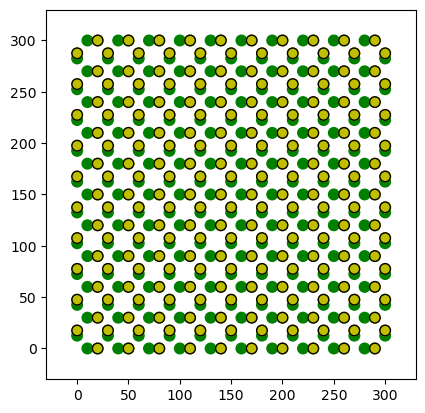
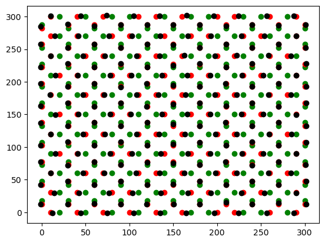
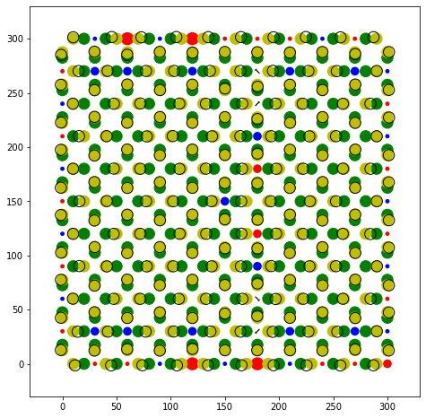
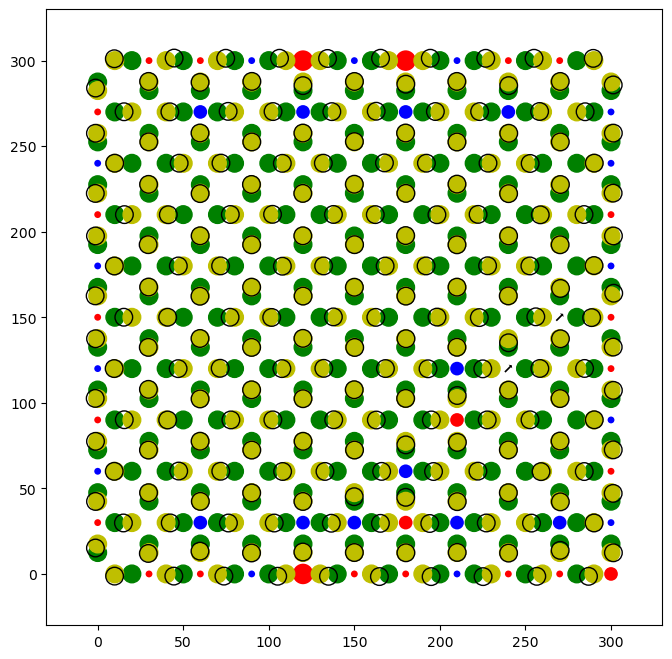

# Polydisperse systems,
In many cases, it can be useful to have traps or particles with different properties. This is supported both by icenumerics.
[1]:
# This only adds the package to the path.
import os
import sys
sys.path.insert(0, '../../../')
import icenumerics as ice
import matplotlib.pyplot as plt
import pandas as pd
import numpy as np
import scipy.spatial as spa
import warnings
warnings.filterwarnings("error")
%load_ext autoreload
%autoreload 2
We first create a colloidal ice to play around with¶
[2]:
ureg = ice.ureg
[3]:
sp = ice.spins()
sp.create_lattice("square",[10,10],lattice_constant=30*ureg.um, border="closed spin")
[4]:
particle = ice.particle(radius = 5.15*ureg.um,
susceptibility = 0.0576,
diffusion = 0.125*ureg.um**2/ureg.s,
temperature = 300*ureg.K,
density = 1000*ureg.kg/ureg.m**3)
trap1 = ice.trap(trap_sep = 10*ureg.um,
height = 80*ureg.pN*ureg.nm,
stiffness = 6e-4*ureg.pN/ureg.nm)
trap2 = ice.trap(trap_sep = 5*ureg.um,
height = 80*ureg.pN*ureg.nm,
stiffness = 6e-4*ureg.pN/ureg.nm)
traps = [trap1 if (s.direction[1]==0) else trap2 for s in sp]
col = ice.colloidal_ice(sp, particle, traps, height_spread = 0, susceptibility_spread = 0.1)
col.pad_region(30*ureg.um)
[5]:
col.display()

[6]:
world = ice.world(
field = 20*ureg.mT,
temperature = 300*ureg.K,
dipole_cutoff = 200*ureg.um)
col.simulate(world,
name = "test",
include_timestamp = False,
targetdir = r".",
framerate = 10*ureg.Hz,
timestep = 10*ureg.ms,
run_time = 10*ureg.s,
output = ["x","y","z","mux","muy","muz"])
scanning file
[7]:
f, (ax2) = plt.subplots(1,1,figsize = (8,8))
col.display(ax2)
for i, trj_i in col.trj.groupby("id"):
if all(trj_i.type==1):
plt.plot(trj_i.x,trj_i.y, color = "r")

Create a ‘vertex’ object from a ‘colloidal_ice’ object¶
[8]:
v = ice.vertices()
v.colloids_to_vertices(col)
[8]:
<icenumerics.vertices.vertices at 0x11156bd30>
[9]:
f, (ax1) = plt.subplots(1,1,figsize = (8,8))
v.display(ax1)
col.display(ax1)

Create a vertex structure from the results of lammps.¶
We can get the vertex structure from a trajectory. To do this, the trajectory must be in the ‘ice’ format obtained by ‘get_ice_trj’:
[10]:
trj = col.trj.copy(deep=True)
trj.head()
[10]:
| type | x | y | z | mux | muy | muz | t | ||
|---|---|---|---|---|---|---|---|---|---|
| frame | id | ||||||||
| 0 | 1 | 1 | 20.0 | 0.0 | 0.0 | 0.0 | 0.0 | 0.001754 | 0.0 |
| 2 | 1 | 50.0 | 0.0 | 0.0 | 0.0 | 0.0 | 0.001754 | 0.0 | |
| 3 | 1 | 80.0 | 0.0 | 0.0 | 0.0 | 0.0 | 0.001754 | 0.0 | |
| 4 | 1 | 110.0 | 0.0 | 0.0 | 0.0 | 0.0 | 0.001754 | 0.0 | |
| 5 | 1 | 140.0 | 0.0 | 0.0 | 0.0 | 0.0 | 0.001754 | 0.0 |
[11]:
col_trj = ice.get_ice_trj(trj, col.bnd, atom_types = 1, trap_types = [2,3])
[12]:
col_trj.head()
[12]:
| type | x | y | z | dx | dy | dz | t | cx | cy | cz | ||
|---|---|---|---|---|---|---|---|---|---|---|---|---|
| frame | id | |||||||||||
| 0 | 0 | 2 | 0.0 | 15.0 | 0.0 | 0.0 | 5.0 | 0.0 | 0.0 | 0.000000e+00 | 2.5 | 0.0 |
| 1 | 2 | 30.0 | 15.0 | 0.0 | 0.0 | 5.0 | 0.0 | 0.0 | 0.000000e+00 | 2.5 | 0.0 | |
| 2 | 2 | 60.0 | 15.0 | 0.0 | 0.0 | 5.0 | 0.0 | 0.0 | -1.421085e-14 | 2.5 | 0.0 | |
| 3 | 2 | 90.0 | 15.0 | 0.0 | 0.0 | 5.0 | 0.0 | 0.0 | 0.000000e+00 | 2.5 | 0.0 | |
| 4 | 2 | 120.0 | 15.0 | 0.0 | 0.0 | 5.0 | 0.0 | 0.0 | 0.000000e+00 | 2.5 | 0.0 |
[13]:
i = 99
plt.plot(
col_trj.loc[i].x-col_trj.loc[i].dx/2,
col_trj.loc[i].y-col_trj.loc[i].dy/2,
'o', color = "green")
plt.plot(
col_trj.loc[i].x+col_trj.loc[i].dx/2,
col_trj.loc[i].y+col_trj.loc[i].dy/2,
'o', color = "red")
plt.plot(
col_trj.loc[i].x+col_trj.loc[i].cx,
col_trj.loc[i].y+col_trj.loc[i].cy,
'o', color = "k")
[13]:
[<matplotlib.lines.Line2D at 0x13a125610>]

[14]:
v = ice.vertices()
frame = 99
v = v.trj_to_vertices(col_trj.loc[frame])
[15]:
f, (ax1) = plt.subplots(1,1,figsize = (8,8))
v.display(ax1)
col.display(ax1)

Multiple frames¶
If the ‘trj’ is a MultiIndex, the ‘trj_to_vertices’ method will iterate over all the indices which are not ‘id’, and calculate the vertex structure of all frames. However, it will only calculate the topology of the first frame.
[16]:
%%time
v = ice.vertices()
frames = col_trj.index.get_level_values("frame").unique()
v.trj_to_vertices(col_trj.loc[frames[:]])
CPU times: user 28.1 s, sys: 1.17 s, total: 29.3 s
Wall time: 29.2 s
[16]:
<icenumerics.vertices.vertices at 0x13a0f1fa0>
[17]:
v.vertices.head()
[17]:
| x | y | coordination | charge | dx | dy | ||
|---|---|---|---|---|---|---|---|
| frame | vertex | ||||||
| 0 | 0 | 300.0 | 150.0 | 3 | 1 | 1.0 | 2.0 |
| 1 | 150.0 | 300.0 | 3 | 1 | 2.0 | 1.0 | |
| 2 | 60.0 | 300.0 | 3 | 1 | 2.0 | 1.0 | |
| 3 | 30.0 | 300.0 | 3 | 1 | 2.0 | 1.0 | |
| 4 | 300.0 | 180.0 | 3 | 1 | 1.0 | 2.0 |
[18]:
f, (ax1) = plt.subplots(1,1,figsize = (8,8))
v.display(ax1)
col.display(ax1)
